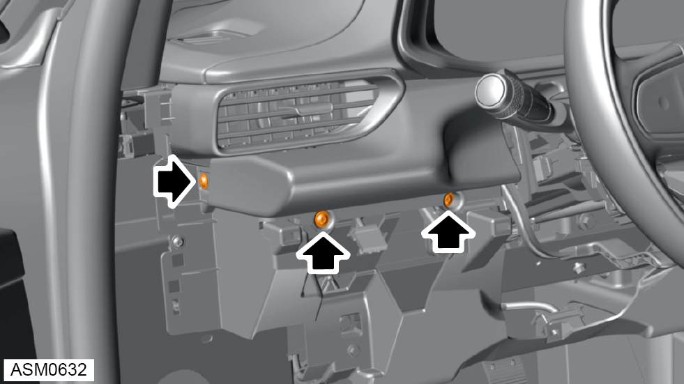
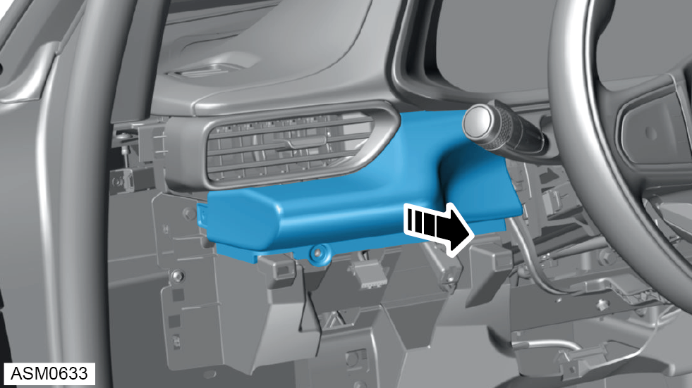
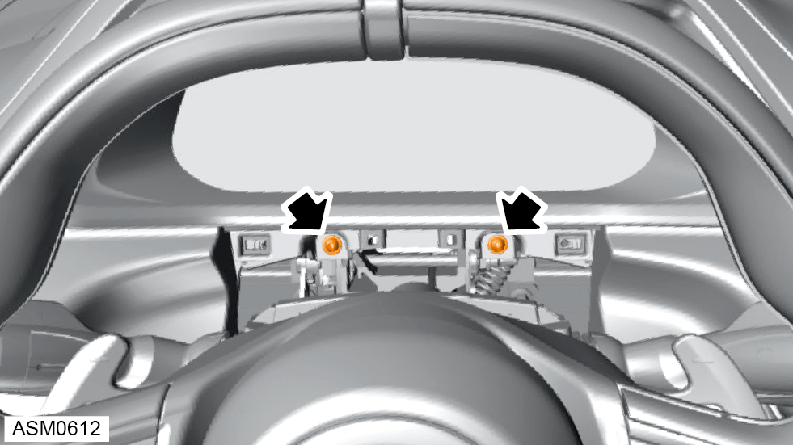
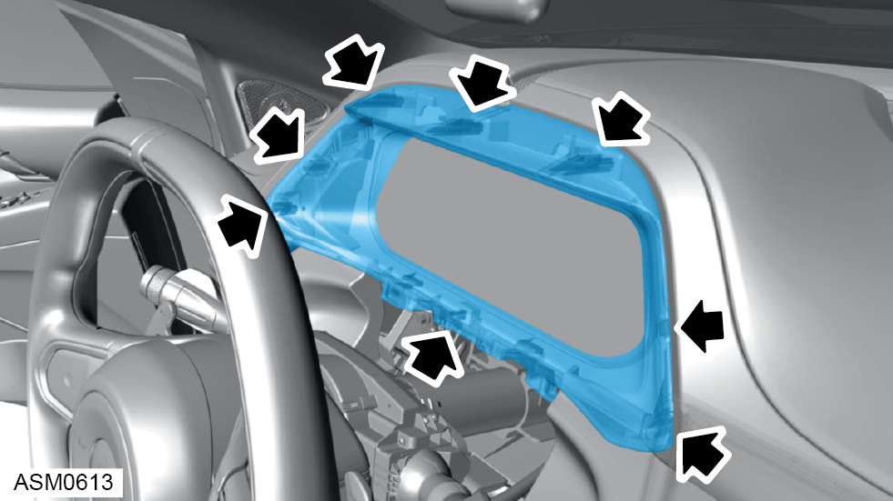
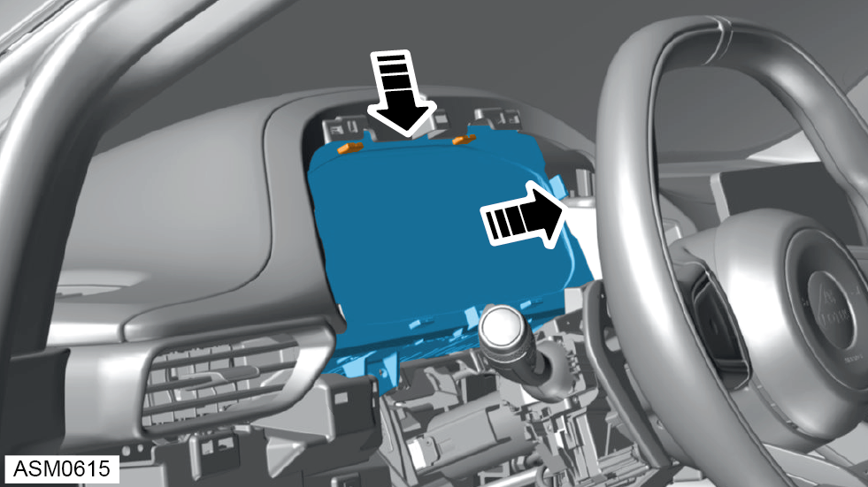
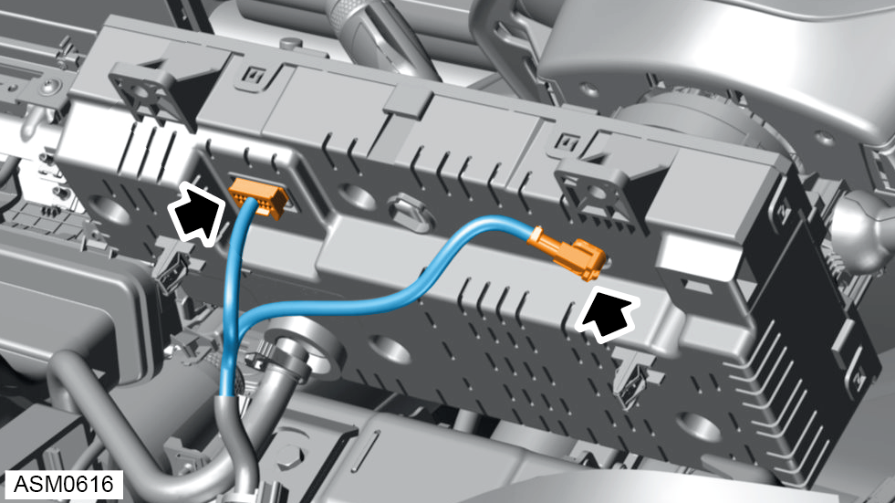
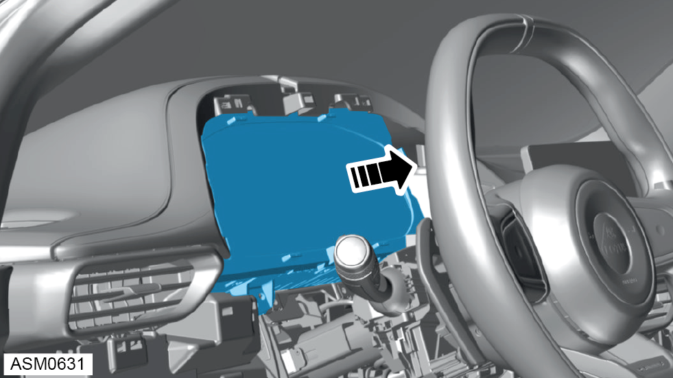

Instrument Pack
Print
Operation Code: 17.07.01-02
Removal
- Disconnect battery. Refer to procedure.
- Remove lower steering column shroud. Refer to procedure.
- Remove dash panel - middle. Refer to procedure.

- Remove M4x16 self tapping screws (x3) securing instrument panel cap assembly to instrument panel.

- Remove instrument panel cap assembly.

- Remove M4x16 self tapping screws (x2) securing lower instrument panel cover to instrument panel.

- Disengage clips (x8) and remove lower instrument panel cover.

- Release upper tabs (x2) securing instrument pack to mounts to gain access to connectors.
NOTE: Drop instrument pack down slightly and then lever out to release the upper tabs.

- Disconnect harness connectors (x2) from instrument pack.
NOTE: Upper fascia panel not shown for clarity.

- Remove instrument pack.
Installation
- Installation is the reverse of removal procedure except for the following:
- After installation perform a diagnostic read and clear error memory using Lotus Insight tool.